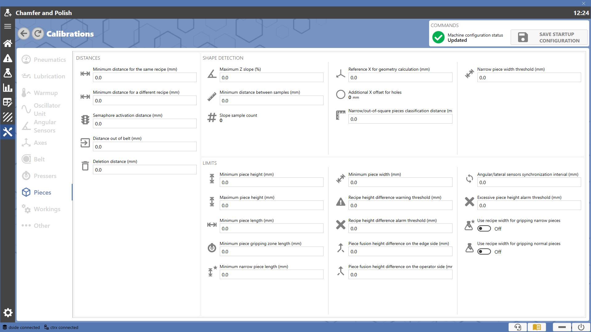
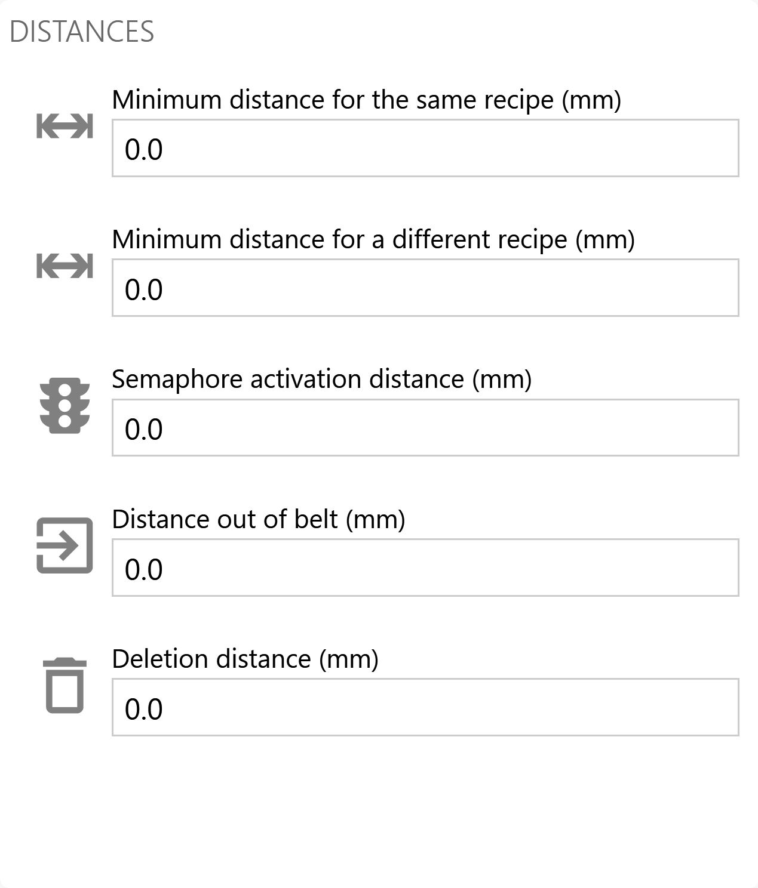
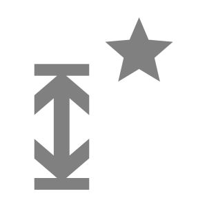
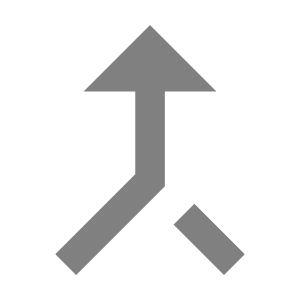
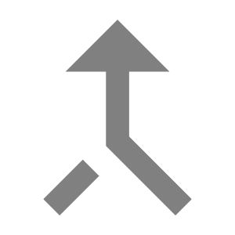

Set piece spacing, shape detection and dimensional thresholds.

Distances
These values defines the distances between pieces used for machine logics.

Minimum distance for the same recipe Minimum spacing used between pieces assigned to the same recipe.
Minimum distance for a different recipe Minimum spacing used between pieces assigned to different recipes.
Semaphore activation distance Distance parameter used to activate the loading semaphore, referenced to the end of the piece.
Distance out of belt Distance parameter referenced to the end of the piece for the out-of-belt condition.
Deletion distance Distance parameter referenced to the end of the piece for removing the piece from tracking.
Shape detection
These values control the inputs and thresholds used for pieces shape detection.
Maximum Z slope Maximum permitted Z slope used by shape detection.
Minimum distance between samples Minimum distance between samples used to evaluate the piece slope.
Slope sample count Number of slope samples returned by the PLC.
Reference X for geometry calculation X reference used for the piece geometry calculation.
Additional X offset for holes Additional X offset for hole calculation returned by the PLC.
Narrow/out-of-square pieces classification distance X distance threshold used to classify narrow or out-of-square pieces.
Narrow piece width threshold Width threshold used to classify a piece as narrow.
Limits
These parameters define limits and thresholds for the pieces dimensions.
Minimum piece height Minimum piece height.
Maximum piece height Maximum piece height.
Minimum piece length Minimum piece length.
Minimum piece gripping zone length Minimum length required for the piece gripping zone.

Minimum narrow piece length Minimum length parameter for a narrow piece.
Minimum piece width Minimum piece width.
Recipe height difference warning threshold Piece-to-recipe height difference threshold used for a warning.
Recipe height difference alarm threshold Piece-to-recipe height difference threshold used for an alarm.

Piece fusion height difference on the edge side Maximum height difference parameter used for considering two consecutive pieces as the same by the edge-side sensor.

Piece fusion height difference on the operator side Maximum height difference parameter used for considering two consecutive pieces as the same by the user-side sensor.
Angular/lateral sensors synchronization interval Distance interval used to synchronize the angular and lateral sensors.
Excessive piece height alarm threshold Height threshold used for the excessive piece height alarm.
Use recipe width for gripping narrow pieces Enables or disables the use of the recipe width for precise gripping of narrow pieces.
Use recipe width for gripping normal pieces Enables or disables the use of the recipe width for precise gripping of normal pieces.